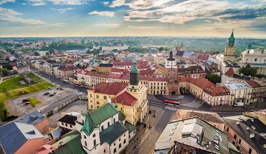
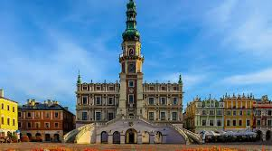
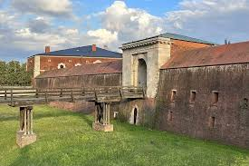

Lubelskie
Najważniejsze miasta
Lublin
Lublin to miasto o bogatej historii, znane z pięknego Starego Miasta oraz Zamku Lubelskiego. Jest ważnym centrum kulturalnym i edukacyjnym, a także miejscem, gdzie odbywa się wiele festiwali, jak np. Carnaval Sztukmistrzów. Zamek Lubelski
Gotycko-renesansowa twierdza z unikalną Kaplicą Trójcy Świętej, której wnętrza zdobią XIV-wieczne freski bizantyjsko-ruskie. Dziś zamek mieści muzeum, a z wieży widokowej można podziwiać panoramę miasta.Lubelska Trasa Podziemna
System dawnych piwnic i korytarzy pod Starym Miastem, pełen legend i opowieści o historii Lublina. Kulminacyjnym punktem zwiedzania jest widowisko światło-dźwięk przedstawiające wielki pożar miasta.
Ogród Botaniczny UMCS
Zielona oaza z tysiącami gatunków roślin, malowniczymi alejkami i zabytkowym dworkiem. Idealne miejsce na spacer i odpoczynek wśród przyrody.Zamość
Zamość to perła renesansowej architektury, wpisana na listę UNESCO, z pięknym Rynkiem Wielkim i fortecą. Miasto zostało zaplanowane i zbudowane przez Jana Zamoyskiego jako „miasto idealne” i do dziś zachowuje swoje unikalne cechy. Rynek Wielki i Ratusz
Perła renesansu, wpisana na listę UNESCO, z kolorowymi kamienicami i monumentalnym ratuszem z charakterystycznymi schodami. To serce miasta, pełne kawiarenek i letnich wydarzeń kulturalnych.Twierdza Zamość
Dawne umocnienia obronne miasta, z zachowanymi bastionami i bramami. Można zwiedzać podziemia, bastion VII oraz przespacerować się po fosach.
Zoo w Zamościu
Jedno z najstarszych ogrodów zoologicznych w Polsce, w którym można zobaczyć rzadkie gatunki, jak białe lwy czy pantery śnieżne. Świetna atrakcja dla rodzin z dziećmi.